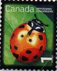
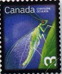
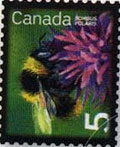
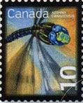
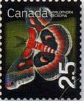
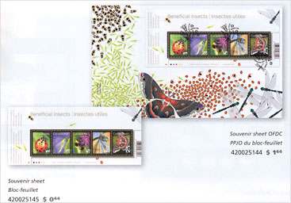
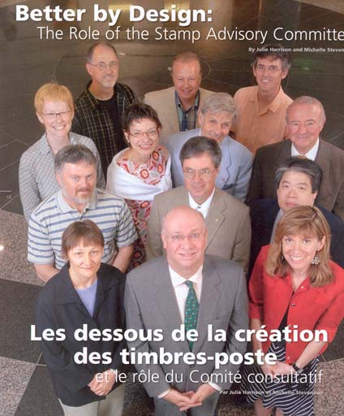

|
Beneficial "Definitive" Insects |
Should the Definitives be Ugly?
The short answer is NO, they shouldn't. And indeed they aren't anymore or at least less then in the past.
Of course, any experienced stamp collector still remembers definitives that were ugly, badly centered, horribly perforated, etc. Due to many variation in their fabrication process, over long time periods, they were and still are very interesting for specialized stamp collectors, but much less attractive for the topical ones.
Here a nice, positive example, of very low value Canadian definitive stamps, issued on 12th of October 2007, in sheets of 50 stamps for each value.





Nice stamps, isn't it? Imagine, one can even get a 50 stamps sheet of the lowest value for just Ca$ 0.50!
But why this big difference in quality when compared to the past? One reason is surely that, due to technological progresses in the printing techniques, it is less expensive today to print nice, colored stamps, like it is it not expensive to print colored images in newspapers and magazines too.
There is just a detail that spoils somehow the pleasure, one that is presented below:

In the same time the Canadian post issued also _two_ souvenir sheets, with the same stamps on them. They can name them "definitives", but are they really? I doubt that they will appear on many covers, because they take a lot of place and because an exact value of C$ 0.44 will be seldom needed...

Just FYI, we show above the members of the Canadian Stamp Advisory Committee, who "have a sense of the significance of important events in the development of this country, also an appreciation of the various factors which go to make up a good stamp design." The picture appeared in the same journal of the Canadian Post, "Details - en détails", Vol. XVI, N° 4, from which we got the data about the Beneficial Insects, Low Value Definitives.
Nice, smiling faces but because 13 is an unfortunate number, what about reducing it (large teams being rarely efficient), and co-opting an experienced stamp connoisseur from Canada, like for example Blair, well known and appreciated in the Internet philatelic circles? I'm confident that with him in this team, the definitives won't suddenly appear in... souvenir sheets.
Here a short excerpt from the discussion on the news:rec.collecting.stamps.discuss newsgroup, of 09/23/07:
<<One of the features common to most definitive stamps is that they have continuous printing during their period of issue.
As supplies run low, more are printed. Commemorative stamps tend to have a pre-determined printing quantity.>>
That's correct, Blair. See also:
"Definitive Stamp
A stamp that is sold for everyday use over a long time period, unlike charity or commemorative issues which are usually only sold for a short time."
http://stamps.nzpost.co.nz/Cultures/en-NZ/Stamps/MoreAboutStamps/StampsTerminology/Stamps+Terminology.htm?getByLetter=d
We know that miniature/souvenir sheets tend to be commemorative rather then definitive issues, being thought for stamp collectors, which represent a small subset of postal customers. The souvenir sheets are more expensive to produce/handle/stock by the post, and less practical to use by its customers, just for franking, and for this reasons their printed quantities are usually limited.
That's why the so called new "Canadian Low Value Definitives" contradict in fact their given name, because they were issued as well as definitives (50 stamps panes) as commemoratives (two souvenir sheets).
The right policy would be to get from the Canadian post two separate issues, one for the definitive 50 sheets panes and another one for the both souvenir sheets.
Last but not least, I just noticed at the end of the three pages long article the following: "Product No. and Quantity 420025144 ($1.44 - 26,000)." Therefore only 26,000 of the "Low Value Definitives" souvenir sheets were printed, which makes them definitively... commemoratives.
Published: 09/22/07. Revised: 09/23/07.
Copyright © 2007 by Victor Manta, Switzerland.
All rights reserved worldwide.
Click the banner above to visit the site